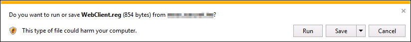
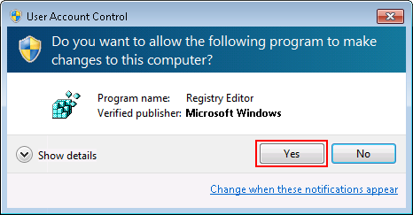
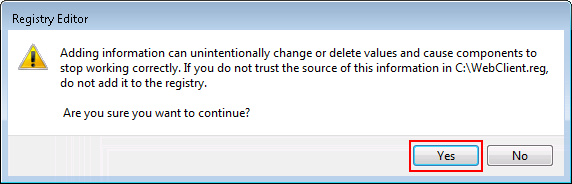
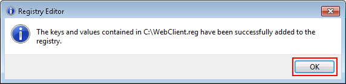
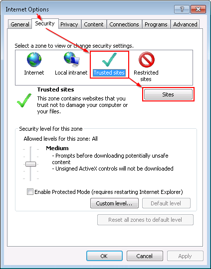
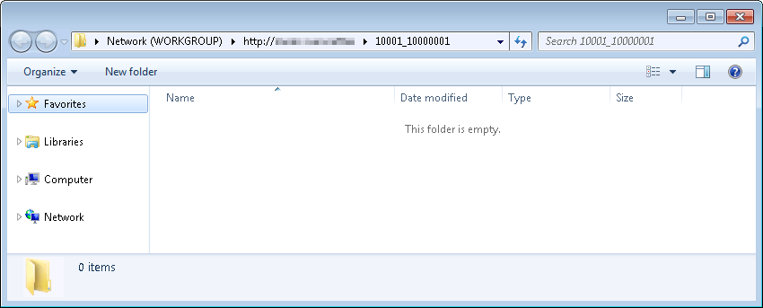

- Install registration file
- Please download WebClient.reg
- Click【Run】
 - Then please click【Yes】under your permission.
 - Then press【Yes】to continue
 - The system prompts Registry Editor. Please press【OK】

- Add to your “Trusted sites”
- Open IE Explorer. Please click “Tools” > “Internet Options” > “Security”
- Click “Trusted sites” , and then “Sites”
 -
At "Add this website to the zone", please input your site http:// .
Remember to unselect "Require server verification (https:) for all sites in these zone".
- Please restart your computer
- Start to use
- First login on your learning system.
- Use Office environment >course management >content upload>Web Folder, and then click【Open】
- The web folder lists you content of the course in the learning system. Please drag and drop your local files to this web folder window.
